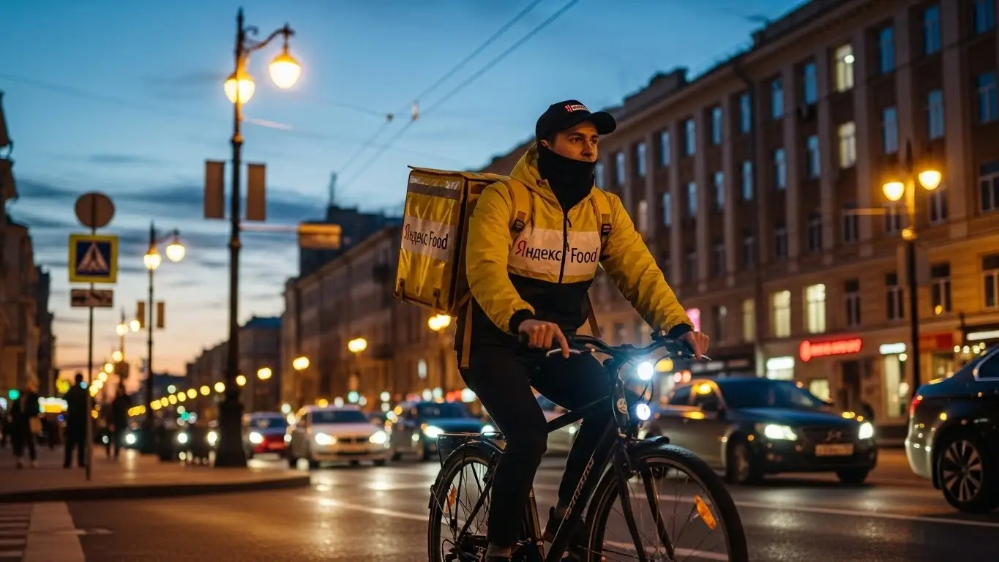
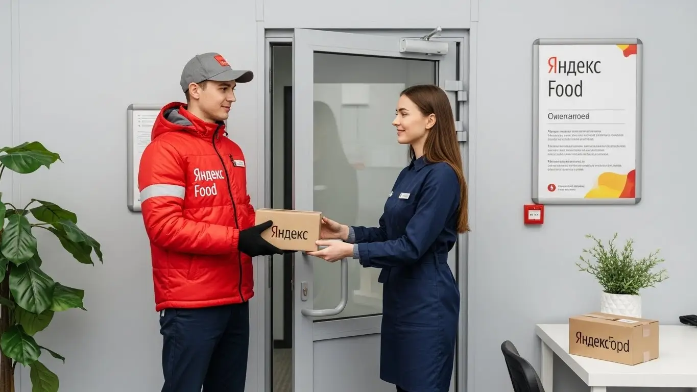

Работа курьером Яндекс Еда в Сергиевом Посаде 2025-2026: доход, график

- Работа курьером Яндекс Еды в Сергиевом Посаде: для кого эта вакансия и что вы получите
- Сколько вы будете зарабатывать курьером в Сергиевом Посаде: калькулятор дохода и разбор выплат
- Реальный заработок курьера в Сергиевом Посаде: смены и месячный доход
- График работы и форматы занятости
- Требования к кандидату и документы
- Самозанятость, налоги и юридическая чистота
- Пошаговое оформление и первый выход на линию в Сергиевом Посаде
- Пешком, на вело или на авто: что выгоднее в Сергиевом Посаде
- Районы, маршруты и «топовые» зоны заказов в Сергиевом Посаде
- Безопасность, страховка, штрафы и оплата простоя
- Плюсы и возможные минусы работы курьером в Сергиевом Посаде
- Реальные истории и отзывы курьеров из Сергиевом Посаде
- Короткие ответы на главные вопросы
- Ответы на главные вопросы о работе курьером Яндекс Еды в Сергиевом Посаде
- Итоги и ваш следующий шаг
Все города
Думаешь о работе курьером Яндекс Еды или Лавки в Сергиевом Посаде? Отлично! Но сразу скажу: это не просто взял сумку и поехал. Многие новички боятся, что будут вкалывать за копейки, убьют свою машину на наших дорогах или вообще нарвутся на штрафы из-за пробок на проспекте Красной Армии или у Лавры. А еще вечные вопросы: где брать заказы, как не застрять в пробке на Новоугличском шоссе в час пик? Забудь про рекламную шелуху – здесь мы поговорим о том, как реально обстоят дела с доставкой в Сергиевом Посаде, без прикрас.
Поверь моему опыту, а я в этой теме давно, и не только как курьер, но и как владелец небольшого таксопарка-партнёра: без понимания всей «внутрянки» этой работы в Сергиевом Посаде ты рискуешь разочароваться уже в первый месяц. Тут ведь не только про заказы речь. Это и расходы на бензин или обслуживание велосипеда, и налоги для самозанятых, и хитрая система рейтинга, которая влияет на твой приоритет. А еще логистика по нашим районам – от Скобянки до Углича – это отдельная песня. Большинство новичков в Сергиевом Посаде совершают одни и те же ошибки, теряя деньги и время просто потому, что не знают местной специфики и не умеют работать с приложением эффективно. Если ты живешь в Сергиевом Посаде, то подробнее про работу курьером Яндекс Еда в Сергиевом Посаде, а также про условия, FAQ, детальный калькулятор и форму заявки можно почитать здесь: работа курьером Яндекс Еда в Сергиевом Посаде.
В этой статье мы разберём всё по полочкам: какой формат работы курьером Яндекс Еды и Яндекс Лавки в Сергиевом Посаде выбрать – пеший, вело или авто – чтобы зарабатывать максимум. Выясним, сколько реально можно получить за смену, посчитаем чистый доход с учетом всех расходов. Покажу на примерах, где находятся самые «рыбные» места и часы, как погода и сезоны влияют на спрос, за что можно получить штраф и как их избежать. А еще сравним Яндекс с конкурентами прямо здесь, в Сергиевом Посаде, и поделюсь отзывами местных ребят, которые каждый день на линии.
Я, Алексей, сам прошел этот путь от курьера до владельца небольшого таксопарка, который сотрудничает с Яндексом. Знаю Сергиев Посад как свои пять пальцев, каждую улочку и каждый светофор. Поэтому сейчас всё разложу по полочкам, как старший брат, который не хочет, чтобы ты наступил на те же грабли. Давай по порядку, без воды и рекламных лозунгов – только реальный опыт работы в доставке в Сергиевом Посаде.
Чтобы тебе было проще ориентироваться в статье и сразу найти ответы на главные вопросы, мы подготовили небольшой навигатор по ключевым темам. Он поможет быстро сориентироваться.
Экспресс-навигация: что ты точно узнаешь о работе курьером в Сергиевом Посаде
В этой статье ты ТОЧНО узнаешь:
- Сколько реально можно заработать за смену и месяц в Сергиевом Посаде на разных видах транспорта?
- Как выбирать «рыбные» районы и слоты, чтобы не мотаться впустую и максимизировать заработок?
- Какой формат доставки (пеший, вело, авто) выгоднее именно для Сергиева Посада и его пригородов?
- Как быстро оформить самозанятость и сколько налогов придётся платить, чтобы работать легально?
- За что могут оштрафовать, как работает страховка и что такое оплата простоя, защищающая твой доход?
- Как быстро пройти оформление и выйти на первую смену без опыта?
А если тебе некогда читать всю статью — переходи сразу к заключению, где ты найдёшь короткие ответы на все эти вопросы и указания, в каких разделах искать подробности.
Прежде чем углубиться в детали, взгляни на эту инфографику. Она даст тебе общее представление о работе курьера в Сергиевом Посаде и поможет быстро уловить суть.
Ключевые цифры работы курьером в Сергиевом Посаде
Работа курьером Яндекс Еды в Сергиевом Посаде: для кого эта вакансия и что вы получите
Работа курьером Яндекс Еды в Сергиевом Посаде — отличный вариант для тех, кто ищет гибкий график и стабильный доход. Она идеально подходит студентам, которым нужна подработка после пар, или людям без опыта, желающим быстро освоить новую профессию. Здесь не требуется специального образования или длительных стажировок, начать работу в сервисе Яндекс можно практически сразу.
Многие выбирают эту вакансию, чтобы совмещать её с основной работой или семейными делами. Возможность самостоятельно планировать смены и получать ежедневные выплаты делает вакансию привлекательной для широкого круга соискателей. Если ты водитель и ищешь дополнительный заработок на своём авто, это тоже твой вариант.
Кому подойдёт эта работа в Сергиевом Посаде
Одно из ключевых преимуществ работы курьером в Сергиевом Посаде — это возможность работать рядом с домом. Жители Центрального района, Северного или Южного микрорайонов могут выходить на смены, не тратя много времени на дорогу через весь город. Это экономит силы, время и деньги на проезд.
Например, если ты живёшь в Северном микрорайоне, можешь брать слоты в своей зоне, где хорошо знаешь улицы и расположение ресторанов. Это позволяет эффективно выполнять заказы, не теряя время на навигацию, и быстро возвращаться домой после смены. Такая локальная привязка делает работу в Яндекс Еде максимально удобной и комфортной.
Краткое обещание по доходу и условиям
В Сергиевом Посаде курьеры Яндекс Еды могут рассчитывать на вполне достойный заработок. Реальный доход за смену обычно составляет от 1500 до 3000 рублей, в зависимости от количества часов и активности. При полной занятости, работая 5-6 дней в неделю, можно выйти на месячный доход в 45 000 – 70 000 рублей и выше.
Важное условие — это ежедневные выплаты, что позволяет всегда иметь деньги под рукой. Ты сам выбираешь удобный график, а отсутствие требований к опыту делает эту работу доступной для каждого, кто готов активно работать. Для оформления потребуется статус самозанятого, что обеспечивает официальный доход и простоту уплаты налогов.
Кейс из практики:
Мой знакомый, студент Сергиево-Посадского филиала Московского политехнического университета, по имени Игорь, живёт в Южном микрорайоне. Он выходит на линию 3-4 раза в неделю по вечерам, после занятий, на 4-5 часов. В среднем, за такой вечер он зарабатывает около 1800-2200 рублей, доставляя заказы в своём районе и соседних. За месяц у него выходит около 30-35 тысяч рублей, что отлично помогает ему с оплатой учёбы и личными расходами. Он говорит, что главное — брать слоты в пиковые часы и не лениться.

Вывод по разделу:
Эта вакансия курьера в Сергиевом Посаде — отличная возможность для тех, кто ценит гибкость и быстрый заработок. Работа курьером Яндекс подходит студентам, людям без опыта и тем, кто ищет подработку рядом с домом. Чтобы максимизировать доход, выбирай слоты в своём районе и работай в пиковые часы.
Сколько вы будете зарабатывать курьером в Сергиевом Посаде: калькулятор дохода и разбор выплат
Заработок курьера Яндекс Еды в Сергиевом Посаде формируется из нескольких ключевых составляющих. Во-первых, это оплата за каждый выполненный заказ, которая зависит от его сложности и стоимости. Во-вторых, ты получаешь доплату за расстояние, пройденное от ресторана до клиента: чем дальше доставка, тем выше эта часть дохода.
Из чего складывается доход курьера
Кроме того, существуют повышающие коэффициенты, которые активируются в часы пик, в плохую погоду или в районах с высоким спросом, например, около ТРЦ «Капитолий». Не забывай про бонусы от сервиса за выполнение определённого количества заказов или за работу в определённые дни. Чаевые от клиентов тоже могут стать приятным дополнением к зарплате.
Важно отметить, что Яндекс Еда предлагает оплату простоя, если заказов временно мало, и возможную компенсацию проезда для автокурьеров, что защищает твой доход. Также для всех курьеров предусмотрено страхование жизни и здоровья на время выполнения доставок.
Как пользоваться калькулятором дохода
Чтобы прикинуть свой потенциальный заработок, можно воспользоваться онлайн-калькулятором дохода. Это простой и удобный инструмент. Тебе нужно выбрать тип доставки — пеший курьер, велокурьер или курьер на автомобиле. Затем укажи, сколько часов в день и сколько дней в неделю ты планируешь работать.
Рассчитай свой примерный доход курьера в Сергиевом Посаде
8 часов в день
5 дней в неделю
Расчёт примерный и не учитывает бонусы, повышающие коэффициенты, возможные простои и индивидуальные особенности заказов.
На выходе калькулятор покажет примерный дневной и месячный доход, который ты можешь получить в Сергиевом Посаде. Конечно, это ориентировочные цифры, но они дают хорошее представление о потенциале заработка и помогают спланировать свою занятость. Все актуальные данные по заказам и доходу доступны в приложении Яндекс Про.
А чтобы узнать точные условия, посмотреть актуальные вакансии и заполнить анкету для работы курьером Яндекс Еда в твоём городе, переходи по ссылке: работа курьером Яндекс Еда в твоём городе. Там же найдешь подробный FAQ и форму заявки.

Примеры расчёта для пешего, вело- и авто‑курьера в Сергиевом Посаде
Давай рассмотрим несколько сценариев для Сергиева Посада. Пеший курьер, работающий в центре города, где много кафе и ресторанов, например, вокруг Лавры и на проспекте Красной Армии, может зарабатывать около 1500-2000 рублей за 6-часовую смену в будни. Заказы там короткие, но их много.
Велокурьер, который активно перемещается между спальными районами, такими как Углич и Ферма, за 8 часов в выходной день может принести до 3000-3500 рублей. Он быстрее пешего, но не зависит от пробок, как автокурьер. Водитель-курьер, охватывающий весь город и пригороды, включая Хотьково и Краснозаводск, при полной загрузке в 10-часовую смену, особенно в плохую погоду, может заработать 4000-5000 рублей и более. Для всех типов курьеров важно иметь термокороб для сохранения качества продуктов.
Кейс из практики:
Мой бывший коллега, водитель-курьер Сергей, живёт в районе Скобяного посёлка. Он предпочитает брать вечерние слоты с 18:00 до 23:00, особенно в пятницу и выходные, а также в дождливую погоду. В такие дни коэффициенты выше, и заказов на авто больше, так как люди не хотят выходить из дома. За 5-6 часов в пик он стабильно зарабатывает 3000-3500 рублей, выполняя дальние заказы по городу и в ближайшие коттеджные посёлки. Он говорит, что главное — следить за картой спроса в приложении Яндекс Про и быть готовым к любым погодным условиям.
Сравнение потенциального дохода курьеров в Сергиевом Посаде
| Параметр | Пеший курьер | Велокурьер | Водитель-курьер |
|---|---|---|---|
| Средний доход за 6-8 часов | 1500 – 2500 ₽ | 2000 – 3500 ₽ | 3000 – 5000 ₽ |
| Оптимальные зоны работы | Центр, плотная застройка | Между спальными районами, центр | Весь город, пригороды (Хотьково, Краснозаводск) |
| Зависимость от погоды | Высокая (сложно в дождь/снег) | Средняя (сложно в сильный дождь/мороз) | Низкая (комфортно в любую погоду) |
| Дополнительные расходы | Минимальные (проезд) | Обслуживание велосипеда | Топливо, амортизация авто |
Вывод по разделу:
Твой заработок как курьера в Сергиевом Посаде напрямую зависит от типа доставки, активности и умения выбирать выгодные слоты. Учитывай все компоненты дохода — от оплаты за заказ до чаевых и бонусов. Используй калькулятор для планирования, но помни, что реальные цифры могут быть выше при грамотном подходе и работе в пиковые часы. Эта работа предлагает гибкие условия и возможность получать стабильный доход.
Реальный заработок курьера в Сергиевом Посаде: смены и месячный доход
Ну что, поговорим о самом главном — о деньгах. Многие интересуются: «Сколько реально зарабатывает курьер в Яндексе?» Отвечу честно, как есть, без прикрас. В Сергиевом Посаде, как и везде, твой доход в доставке зависит от многих факторов: сколько часов ты работаешь, на чём доставляешь и, конечно, от твоей смекалки. Это не фиксированная зарплата, а скорее сдельная оплата, которая может быть очень достойной, если подойти к делу с умом и знать условия работы.
Здесь нет потолка, но и халявы тоже не жди. Твой заработок напрямую связан с активностью и правильным выбором стратегии. Я видел ребят, которые за пару часов поднимали больше, чем другие за полный день, просто потому, что знали, где и когда ловить "рыбные" заказы. Важно понимать, что приложение Яндекс Про предлагает гибкие условия работы, но и ответственность за свой заработок лежит на тебе.
Диапазон дохода для подработки и полной занятости
Давай разберем конкретные цифры для Сергиева Посада. Если ты ищешь подработку курьером, выходя на линию 2–4 часа в день, то пеший курьер может рассчитывать на 800–1500 рублей. Велокурьер, за счет большей мобильности, часто добирается до 1200–2000 рублей за те же 2–4 часа. Автокурьер, особенно в часы пик, может заработать 1500–2500 рублей. Это реальные вилки, показывающие, сколько можно заработать, и они зависят от количества заказов и коэффициентов.
При полной занятости, когда ты работаешь 8–10 часов, цифры, конечно, выше. Пеший курьер в Сергиевом Посаде, работая с Яндекс Едой или Яндекс Доставкой, может получать 2500–4000 рублей в день. Велокурьер — 3000–5000 рублей. А вот автокурьеры, особенно те, кто готов ездить по всему городу и в пригороды вроде Хотьково или Пересвета, могут доходить до 5000–7000 рублей за смену в хорошие дни. Это уже серьезный доход, который позволяет стабильно зарабатывать в месяц.
| Тип курьера | Подработка (2-4 часа/день) | Полная занятость (8-10 часов/день) | Месячный доход (полная занятость) |
|---|---|---|---|
| Пеший курьер | 800 – 1 500 ₽ | 2 500 – 4 000 ₽ | 50 000 – 80 000 ₽ |
| Велокурьер | 1 200 – 2 000 ₽ | 3 000 – 5 000 ₽ | 60 000 – 100 000 ₽ |
| Автокурьер | 1 500 – 2 500 ₽ | 5 000 – 7 000 ₽ | 100 000 – 140 000 ₽ |
Кейс из практики: Мой знакомый, студент из района Ферма, работает пешим курьером Яндекс Еды по вечерам, 3-4 часа после пар. Он выбирает слоты в центре, вокруг Троице-Сергиевой Лавры и Проспекта Красной Армии, где много кафе. За вечер у него выходит в среднем 1200-1800 рублей, что для подработки очень неплохо. Он говорит, что главное — не лениться и брать заказы без долгих пауз.

Вывод по доходу: Реальный заработок курьера в Сергиевом Посаде очень сильно зависит от твоей вовлеченности и выбора формата работы. Если ты готов работать полный день, особенно на авто, то месячный доход в Яндекс может быть сопоставим с офисной зарплатой, а то и выше. Мой совет: начни с подработки, чтобы понять специфику, а потом уже решай, стоит ли переходить на полную занятость.
Как район, время суток и погода влияют на доход
В Сергиевом Посаде, как и в любом городе, есть свои "хлебные" места и часы, влияющие на заработок курьера. Вечера, особенно с 18:00 до 22:00, и выходные дни — это золотое время для курьеров. В эти периоды спрос на доставку еды и товаров резко возрастает, а вместе с ним растут и повышающие коэффициенты в приложении Яндекс Про. Это значит, что за каждый заказ ты получаешь больше, чем в обычное время.
Погода тоже играет тебе на руку. Дожди, снегопады, сильный ветер или, наоборот, аномальная жара — всё это заставляет людей оставаться дома и заказывать доставку. В такие дни коэффициенты могут взлетать до максимума, и даже за короткий слот можно очень хорошо заработать. К тому же, в плохую погоду клиенты чаще оставляют чаевые, ценя твой труд.
Кейс из практики: В прошлом году, когда был сильный снегопад, один из моих автокурьеров, Сергей, работал всего 6 часов в районе Скобяного и центра. За счет высоких коэффициентов и щедрых чаевых он заработал почти 4500 рублей. В обычный день за это время он бы получил около 2500-3000. Погода — твой союзник, если ты готов к ней.
Советы по увеличению заработка от опытных курьеров
Чтобы твой заработок в доставке был стабильно высоким, нужно не просто работать, а работать с умом. Во-первых, всегда выбирай слоты в зонах с высоким спросом. В Сергиевом Посаде это, как правило, центр города (Проспект Красной Армии, Красногорская площадь), районы вокруг крупных ТРЦ, таких как "Капитолий" или "Счастливая 7Я". Также выгодными считаются густонаселенные спальные районы вроде Северного или Южного.
Во-вторых, не бойся комбинировать типы доставки. Если ты автокурьер, можешь доехать до центра, припарковаться и взять несколько пеших или велозаказов в плотной застройке, где на машине передвигаться сложно. Это позволяет эффективно использовать время и избегать пробок. Велокурьеры, в свою очередь, могут быстро перемещаться между районами, например, от Углича до Семхоза, минуя заторы.
Кейс из практики: Мой давний знакомый, велокурьер Игорь, живет в районе Северный. Он заметил, что утром и днем много заказов из "Яндекс Лавки" и магазинов в его районе, а вечером спрос смещается к центру. Он планирует свои слоты так: до обеда работает в Северном, а после обеда переезжает в центр, чтобы ловить вечерние пики. Такой подход позволяет ему зарабатывать до 4000 рублей в день без лишних переработок.
Вывод по советам: Для увеличения заработка без лишних усилий, планируй свои выходы, выбирай "рыбные" зоны и не бойся менять тип транспорта в течение смены, если это позволяет городская специфика. Главный совет: всегда анализируй, где сейчас максимальный спрос, и будь там.
График работы и форматы занятости
Один из главных плюсов работы курьером в Яндекс Еде — это гибкий, свободный график. Ты сам решаешь, когда и сколько работать, что делает эту вакансию идеальной для подработки или совмещения с другими делами. Нет начальников, которые диктуют тебе расписание, и это очень ценно. Ты можешь выбрать полную занятость или выходить на линию всего на несколько часов в день.
Приложение Яндекс Про дает тебе полный контроль над своим временем. Ты видишь доступные слоты, можешь их бронировать заранее или выходить на свободную линию, если есть такая возможность. Это позволяет адаптировать работу под учебу, основную работу или личные дела, что для многих является решающим фактором при выборе такого формата занятости.
Подработка после учёбы или основной работы
Для студентов Сергиево-Посадского гуманитарно-социального института или тех, кто уже имеет основную работу, подработка курьером — отличный вариант. Ты можешь выходить на смены вечером, после пар или рабочего дня, или же посвятить доставке все выходные. Например, студентка Маша из района Скобяной работает пешим курьером по будням с 18:00 до 21:00. За эти 3 часа она успевает выполнить 5-7 заказов и заработать около 1000-1500 рублей.
Другой пример: Иван, который работает в офисе в Москве, но живет в Семхозе, по выходным становится автокурьером. Он выходит на линию в субботу и воскресенье на 8-10 часов каждый день. За эти два дня он стабильно зарабатывает 8000-10000 рублей, что является существенным дополнением к его основному доходу. Такая гибкость позволяет ему не жертвовать личной жизнью ради денег.
Кейс из практики: Мой племянник, студент, живет в районе Углич. Он работает пешим курьером 4 часа в будни после занятий. За это время он зарабатывает в среднем 1500-2000 рублей, что полностью покрывает его карманные расходы и позволяет не зависеть от родителей. Он говорит, что главное – не пропускать слоты и быть активным.
Вывод по подработке: Работа курьером идеально подходит для тех, кому нужен дополнительный заработок без жестких обязательств. Это отличная подработка без опыта, где ты сам строишь свой график, что позволяет легко совмещать доставку с учебой или основной работой. Мой совет: начни с 2-3 слотов в неделю, чтобы понять, насколько тебе комфортен такой ритм.
Полная занятость: как выглядит типичный день курьера
Если ты выбираешь полную занятость, твой день будет более структурированным, но все равно гибким. Типичный день автокурьера в Сергиевом Посаде может выглядеть так: выход на линию в 9:00-10:00 утра. Сначала выбираешь район с хорошим утренним спросом, например, вокруг ТРЦ "Счастливая 7Я" или в районе Северный, где много офисов и жилых домов. До обеда выполняешь заказы из кафе и магазинов.
Около 13:00-14:00 можно сделать перерыв на обед, а затем снова выйти на линию, чтобы поймать дневные заказы. Самый активный период начинается вечером, с 18:00, когда люди возвращаются домой и заказывают ужин. В это время лучше переместиться в центр или к крупным жилым массивам. Заказы чередуются с небольшими перерывами, и к 22:00-23:00 ты заканчиваешь смену, заработав свои 5000-7000 рублей.
Кейс из практики: Один из моих водителей, Алексей, работает автокурьером на полной занятости. Он начинает в 9 утра в районе Скобяного, где много заказов из "Яндекс Лавки". В обед он переезжает ближе к центру, а вечером работает по всему городу, включая дальние заказы в пригороды, такие как Хотьково. За 9-10 часов он стабильно зарабатывает 4000-5500 рублей, что позволяет ему содержать семью.
Вывод по полной занятости: Работая полный день, ты можешь обеспечить себе стабильный и высокий доход, самостоятельно управляя своим расписанием. Условия работы позволяют тебе выбирать удобный график. Главное — правильно распределять силы и выбирать зоны с максимальным спросом в течение дня. Мой совет: не забывай про короткие перерывы, чтобы не выгореть и оставаться продуктивным.
Как планировать слоты и выходы через приложение «Яндекс Про»
Приложение «Яндекс Про» — твой главный инструмент для планирования работы курьером. Через него ты можешь заранее бронировать слоты (временные отрезки для работы) в определенных зонах Сергиева Посада. Это очень удобно, так как ты заранее знаешь, где и когда будешь работать, и можешь быть уверен в наличии заказов. Чем раньше ты бронируешь, тем больше выбор.
Важно не опаздывать на забронированные слоты. Пунктуальность напрямую влияет на твой рейтинг и доступ к более выгодным заказам. Если ты регулярно опаздываешь или отменяешь слоты, система может снизить твой приоритет, и тебе будет сложнее получать хорошие заказы. Наоборот, ответственное отношение к слотам повышает твой рейтинг, открывая доступ к лучшим предложениям и бонусам.
Кейс из практики: Мой курьер, Ольга, всегда бронирует слоты на неделю вперед. Она выбирает утренние часы в районе Троице-Сергиевой Лавры, где много туристов и местных жителей заказывают завтраки, и вечерние слоты в районе Южный, где плотная жилая застройка. Благодаря такому планированию и пунктуальности, у нее всегда высокий рейтинг, и она получает самые выгодные заказы, что напрямую влияет на ее доход.
Вывод по планированию: Используй приложение «Яндекс Про» для эффективного планирования своих выходов. Заранее бронируй слоты в перспективных зонах и всегда приходи вовремя, чтобы поддерживать высокий рейтинг и стабильный доход. Мой совет: относись к планированию серьезно, это напрямую влияет на твой кошелек.
Требования к кандидату и документы
Начать работу курьером в Яндекс Еде в Сергиевом Посаде проще, чем кажется. Многие ошибочно полагают, что нужны особые навыки или горы бумаг, но на самом деле требования к кандидатам вполне адекватные. Главное — быть ответственным и иметь желание зарабатывать. Я сам через это проходил, когда начинал, и могу подтвердить: условия максимально лояльные.
Яндекс Еда стремится сделать вакансии курьера доступными для большинства, кто хочет получать стабильный доход. Поэтому основные условия работы просты, и большинство людей им соответствует. Не переживай, если у тебя нет опыта — это не проблема, ведь сервис предоставляет обучение и всестороннюю поддержку.
Возраст, гражданство и базовые условия
Первое, что нужно знать: работа курьером в Яндекс Еде доступна только с 18 лет. Это правило распространяется на все типы доставки — для пеших, вело- и автокурьеров. Требования к гражданству также стандартны: ты должен быть гражданином РФ или одной из стран ЕАЭС (Армения, Беларусь, Казахстан, Кыргызстан). Это необходимо для официального оформления и уплаты налогов.
Что касается здоровья и физической формы, здесь всё логично. Если ты пеший курьер, тебе придется много ходить по Сергиеву Посаду, особенно по центру города, где немало подъемов и спусков, например, в районе Троице-Сергиевой Лавры или вдоль проспекта Красной Армии. Велокурьеру потребуется выносливость, чтобы крутить педали по улицам вроде Московского шоссе или по спальным районам типа Углича. Водитель-курьер, конечно, физически нагружен меньше, но ему нужно быть предельно внимательным на дорогах.
Какие документы нужны для работы курьером
Список документов для работы курьером Яндекс Еды довольно короткий и понятный. Тебе понадобится паспорт гражданина РФ или страны ЕАЭС, чтобы подтвердить личность и гражданство. Также необходим ИНН (индивидуальный номер налогоплательщика) для регистрации в налоговой и оформления самозанятости.
Обязательно нужна банковская карта, на которую будут приходить твои ежедневные выплаты. Это может быть карта любого российского банка. Медкнижка требуется не всегда, но если ты планируешь доставлять продукты из магазинов, например, из «Пятёрочки» или «ВкусВилла» в ТЦ «Капитолий», то она понадобится. Лучше уточнить этот момент заранее, чтобы не терять время. Подготовить эти документы несложно: паспорт и ИНН у большинства уже есть, карту можно оформить в любом банке, а медкнижку — в поликлинике или частном медцентре. Для управления заказами и отслеживания заработка тебе также понадобится смартфон с приложением Яндекс Про.
Можно ли работать с 16 лет и какие есть альтернативы
Как я уже говорил, в Яндекс Еду берут только с 18 лет. Это строгое правило, обусловленное законодательством и требованиями сервиса к ответственности курьеров. Поэтому, если тебе 16 или 17 лет, устроиться курьером в Яндекс Еду, к сожалению, не получится.
Однако не стоит расстраиваться, если ты ищешь подработку в Сергиевом Посаде. Есть и другие варианты, которые подойдут подросткам. Например, можно рассмотреть работу промоутером, помощником в небольших магазинах или кафе, не связанных с крупными агрегаторами. Иногда местные предприниматели готовы брать на легкую работу подростков, но всегда важно уточнять условия и убедиться, что всё оформлено официально и соответствует трудовому законодательству для несовершеннолетних.
Кейс из практики:
Мой знакомый, Сергей из района Ферма, хотел начать подрабатывать курьером сразу после школы, в 17 лет. Он был очень мотивирован, но столкнулся с возрастным ограничением. В итоге, Сергей нашел работу в местной пекарне, помогал с выпечкой и развозил заказы по району на велосипеде, но уже не через крупный сервис. Через год, когда ему исполнилось 18, он сразу же оформился в Яндекс Еду и теперь успешно доставляет заказы по всему Сергиеву Посаду, получая ежедневные выплаты.
Вывод по разделу:
Итак, требования к курьерам Яндекс Еды в Сергиевом Посаде просты и понятны: возраст от 18 лет, гражданство РФ или ЕАЭС, наличие смартфона и базовый набор документов. Главное — быть готовым к физической активности, особенно если ты пеший или велокурьер. Чтобы избежать задержек и быстро начать работу, заранее подготовь паспорт, ИНН и банковскую карту, а при необходимости — медкнижку.
| Параметр | Пеший/Велокурьер | Автокурьер |
|---|---|---|
| Возраст | От 18 лет | От 18 лет |
| Гражданство | РФ или ЕАЭС | РФ или ЕАЭС |
| Документы | Паспорт, ИНН, банковская карта (медкнижка по требованию) | Паспорт, ИНН, банковская карта, водительские права (медкнижка по требованию) |
| Смартфон | Android (от 5.0) | Android (от 5.0) |
| Физ. форма | Хорошая (много ходьбы/езды) | Удовлетворительная (внимательность на дороге) |
Самозанятость, налоги и юридическая чистота
Теперь давай поговорим о том, как всё это оформляется с точки зрения закона и денег. Многие новички боятся слова «самозанятость» и думают, что это сложно, но на самом деле это самый простой и выгодный способ легально работать курьером в Яндекс Еде. Такой формат позволяет тебе быть самому себе начальником и при этом иметь официальный доход.
Яндекс Еда, как и другие крупные сервисы доставки, работает с курьерами именно по такой схеме, потому что это удобно для всех. Ты получаешь полную свободу и гибкий график, а сервис — возможность эффективно взаимодействовать с большим количеством исполнителей. Неофициальная работа или «серый» кэш — это всегда риски, тогда как самозанятость даёт тебе уверенность и юридическую защиту.
Почему курьеры Яндекс Еды работают как самозанятые
Формат самозанятости, или как его ещё называют, налог на профессиональный доход (НПД), стал основным для курьеров Яндекс Еды. Это не просто так: он даёт тебе официальный доход, что важно для получения кредитов, ипотеки или просто подтверждения платежеспособности. При этом тебе не нужно разбираться в сложной бухгалтерии или заполнять множество отчётов.
Всё максимально упрощено: ты выполняешь заказы, а приложение «Мой налог» автоматически фиксирует твой доход и рассчитывает налог. Это полностью легально, и ты можешь быть уверен, что работаешь «вбелую», без каких-либо проблем с законом. К тому же, самозанятость позволяет тебе самому решать, когда и сколько работать, что идеально сочетается со свободным графиком курьера.
Как за 10 минут оформить самозанятость через «Мой налог»
Оформить самозанятость — дело буквально 10 минут, и это можно сделать прямо из дома в Сергиевом Посаде. Тебе понадобится смартфон и доступ в интернет. Сначала скачай официальное приложение «Мой налог» из App Store или Google Play. Затем пройди простую регистрацию: можно по номеру телефона и ИНН, либо через учётную запись на Госуслугах.
После регистрации тебе нужно будет привязать банковскую карту, с которой будут списываться налоги. Это всё! Никаких походов в налоговую, никаких очередей. Ты сразу же становишься самозанятым и можешь начинать работу курьером. Некоторые официальные партнёры Яндекс Еды также предлагают помощь в оформлении самозанятости, но через «Мой налог» это делается элементарно.
Сколько и как платить налоги
Как самозанятый, ты платишь очень низкий налог: 4% с доходов, полученных от физических лиц, и 6% с доходов от юридических лиц или ИП. Поскольку Яндекс Еда является юридическим лицом, с твоих доходов будет удерживаться 6%. Это фиксированная ставка, которая не зависит от суммы заработка или твоей зарплаты.
Списание налога происходит автоматически. Тебе не нужно ничего считать самому: приложение «Мой налог» каждый месяц формирует квитанцию, и ты просто оплачиваешь её до 28 числа следующего месяца. Это намного проще и безопаснее, чем работать неофициально, получать «серый» кэш и постоянно переживать о возможных проблемах с налоговой. С самозанятостью ты спишь спокойно, зная, что все твои доходы легальны и прозрачны.
Кейс из практики:
Мой сосед по Сергиеву Посаду, Иван, долгое время работал на стройке «по-серому», получая зарплату в конверте. Когда он решил попробовать себя в работе курьером Яндекс Еды, я посоветовал ему оформить самозанятость. Иван боялся, что это сложно, но справился за 15 минут. Теперь он доволен: видит все свои доходы в приложении, платит 6% и не переживает за проверки. За месяц, работая по 5-6 часов в день, он спокойно зарабатывает 50-60 тысяч рублей, и все эти деньги — официальные.
Вывод по разделу:
Самозанятость — это удобный и легальный способ работать курьером в Яндекс Еде в Сергиевом Посаде. Оформление занимает считанные минуты через приложение «Мой налог», а налоги (4-6%) рассчитываются и оплачиваются автоматически. Это даёт тебе официальный доход, юридическую чистоту и избавляет от рисков, связанных с неофициальной работой.
| Параметр | Самозанятый курьер | Неофициальная работа / «Серый» кэш |
|---|---|---|
| Официальность дохода | Да, полностью легально | Нет, доход не подтверждён |
| Налоговая ставка | 4% (физлица), 6% (юрлица/ИП) | 0% (но с риском штрафов и доначислений) |
| Оформление | Через приложение «Мой налог» за 10 минут | Нет оформления, договорённости «на словах» |
| Бухгалтерия | Автоматический учёт в приложении | Отсутствует, нет подтверждений доходов |
| Риски | Минимальные, работа по закону | Высокие (штрафы, блокировки, отсутствие соц. гарантий) |
| Подтверждение дохода | Есть (справки из «Мой налог») | Нет |
Пошаговое оформление и первый выход на линию в Сергиевом Посаде
Итак, решил попробовать себя в доставке? Отлично. Первые шаги к работе курьером в Яндекс Еде в Сергиевом Посаде максимально простые и понятные. Начинается всё с заполнения анкеты на сайте или через приложение Яндекс Про. Там ты указываешь базовые данные: ФИО, номер телефона, город (обязательно Сергиев Посад), и выбираешь, как будешь доставлять — пешком, на велосипеде или на авто. Эта работа доступна без опыта и отлично подходит для подработки.
Шаг 1–2: анкета и онлайн‑обучение
После заполнения анкеты и проверки твоих данных (обычно это занимает немного времени), тебе предложат пройти короткое онлайн-обучение. Не переживай, это не университетские лекции, а скорее интерактивный курс с важными моментами. Тебя познакомят с правилами сервиса, стандартами общения с клиентами и, конечно, основами безопасности на линии. В конце обучения будет небольшой тест, чтобы убедиться, что ты всё усвоил. Это важно, чтобы потом не было неприятных сюрпризов и штрафов. Также на этом этапе ты узнаешь о требованиях к доставщикам и необходимости оформления самозанятости.

Шаг 3: получение сумки и доступа к заказам в Сергиевом Посаде
Когда онлайн-обучение пройдено, следующим шагом будет получение термосумки или термокороба и фирменной экипировки. В Сергиевом Посаде это можно сделать несколькими способами. Чаще всего доставщики забирают сумки через официальных партнёров сервиса или в специальных пунктах выдачи. Например, такие пункты могут располагаться в районе ТРЦ «Капитолий» или в других центральных точках города, чтобы было удобно добираться.
Точные адреса и часы работы этих точек всегда можно посмотреть прямо в приложении Яндекс Про. Если тебе неудобно ехать, иногда есть возможность заказать доставку сумки на дом, но это лучше уточнить в поддержке. Получив термосумку, ты фактически получаешь доступ к заказам и становишься полноценным курьером Яндекс Еды или Яндекс Доставки. Это ключевой момент, после которого ты уже готов выходить на линию и начать зарабатывать.
Шаг 4: первый слот и первый доход
Вот и настал самый интересный момент – первый выход на линию и получение первых заказов. В приложении Яндекс Про ты выбираешь удобный для себя слот (время работы) и район. Это обеспечивает свободный график, что очень удобно для подработки. Для первого раза советую выбрать знакомый район Сергиева Посада, например, центр города или свой спальный район, вроде Углича, чтобы не тратить время на ориентирование.
Как только ты выйдешь на линию, приложение начнет предлагать заказы. Не бойся, если сначала будет немного непривычно – это нормально. Главное, внимательно следовать инструкциям в приложении, не торопиться и быть вежливым с клиентами. Многие новички получают свои первые заказы уже в тот же день или на следующий после оформления. Помни, что каждый выполненный заказ – это твой первый реальный доход, который ты увидишь в балансе приложения. Ежедневные выплаты — одно из главных преимуществ работы курьером в Яндексе, позволяющее быстро увидеть свой заработок.
Кейс из практики: Мой знакомый, студент из Сергиева Посада, решил подработать курьером. Он заполнил анкету вечером, утром прошёл обучение, а к обеду уже забрал термосумку в пункте выдачи возле вокзала. В тот же день он взял слот на 4 часа в центре города. За это время он выполнил 5 заказов, получив около 1200 рублей. Конечно, поначалу он немного путался с адресами, но быстро освоился. Это отличный пример, как можно заработать свой первый доход без опыта.
Краткий вывод: Процесс оформления и выхода на линию максимально упрощён, чтобы ты мог начать зарабатывать быстро и без опыта. Все шаги интуитивно понятны, а поддержка всегда готова помочь. Мой совет: не откладывай, чем быстрее пройдешь все этапы, тем быстрее увидишь свой первый доход от работы курьером в Яндекс Еде или Яндекс Доставке.
Пешком, на вело или на авто: что выгоднее в Сергиевом Посаде
Если ты предпочитаешь работать без транспорта, пешая доставка в Сергиевом Посаде — отличный вариант, особенно для центральных и исторических районов. Здесь, вокруг Лавры, на улице Карла Маркса и в прилегающих кварталах, плотная застройка, много кафе и ресторанов, а расстояния между ними небольшие. К тому же, в часы пик и выходные дни центр города часто стоит в пробках, и пеший доставщик может быть быстрее автомобиля.
Пеший курьер: для центра и плотной застройки в Сергиевом Посаде
Для пешего курьера это ещё и своего рода оплачиваемый фитнес. Ты всегда в движении, дышишь свежим воздухом (насколько это возможно в городе) и не тратишься на бензин или обслуживание транспорта. Главное — удобная обувь и готовность к активной работе. В таких районах, как исторический центр, где много пешеходных зон и узких улочек, пеший курьер часто оказывается самым эффективным для доставки заказов Яндекс Еды.
Велокурьер: быстрые доставки между спальными районами
Велосипед — это золотая середина для доставщика в Сергиевом Посаде. Он даёт отличную скорость и маневренность, позволяя объезжать пробки и быстро перемещаться между районами. Особенно выгодно работать на велосипеде, если ты живёшь в одном из спальных районов, например, в Угличе или Северном, и хочешь доставлять заказы поблизости. Здесь много жилых домов, магазинов и небольших кафе, что обеспечивает стабильный поток заказов.
Велокурьерство — это ещё и отличная возможность совместить работу с физической активностью. Ты не только зарабатываешь, но и поддерживаешь себя в форме, что для многих является дополнительным плюсом. В Сергиевом Посаде, где есть как плотные жилые массивы, так и относительно ровные дороги между ними, велокурьер позволяет эффективно охватывать большую территорию, чем пешком, и быть более мобильным, чем на авто в условиях городского трафика.
Водитель‑курьер: заказы по всему городу и пригороду [ПРИГОРОДЫ_ГОРОДА]
Для тех, у кого есть личный автомобиль, работа водителем-курьером открывает самые широкие возможности в Сергиевом Посаде и его окрестностях. На машине ты можешь брать дальние заказы, которые пешим или велокурьерам просто не под силу. Это особенно выгодно, когда нужно доставить что-то из центра в отдалённые спальные районы или даже в пригороды, такие как Хотьково, Пересвет или Краснозаводск.
Автомобиль даёт комфорт, особенно в плохую погоду — дождь, снег, сильный ветер. В такие дни спрос на доставку сильно возрастает, а повышающие коэффициенты делают работу на авто особенно прибыльной. Кроме того, в часы пик, когда заказов много, водитель-курьер может выполнить больше доставок за счёт скорости и возможности перевозить крупные или тяжёлые заказы, которые не возьмёт пеший или велокурьер. Это отличный способ увеличить свой доход и заработок.
Сравнение форматов работы курьером в Сергиевом Посаде
| Параметр | Пеший курьер | Велокурьер | Водитель‑курьер |
|---|---|---|---|
| Зоны работы | Исторический центр, плотная застройка | Спальные районы (Углич, Северный), между районами | Весь город, пригороды (Хотьково, Пересвет) |
| Скорость доставки | Средняя, зависит от трафика и расстояний | Высокая, обходит пробки | Высокая, особенно на дальних дистанциях |
| Физическая нагрузка | Высокая | Средняя (оплачиваемый фитнес) | Низкая |
| Расходы | Минимальные (удобная обувь) | Обслуживание велосипеда | Топливо, обслуживание авто |
| Тип заказов | Небольшие, лёгкие | Средние, до 10-15 кг | Любые, в т.ч. крупногабаритные |
| Доход | Стабильный в центре, ниже на дальних | Хороший за счёт скорости и маневренности | Высокий на дальних и в плохую погоду |
Кейс из практики: Мой знакомый, Сергей, живёт в Сергиевом Посаде и работает автокурьером. Он часто берёт слоты по вечерам и в выходные, когда много заказов из ресторанов в центре в сторону Хотьково или Пересвета. В среднем за 5-6 часов он делает 7-8 таких доставок, и его доход за смену легко переваливает за 3000 рублей, особенно если есть повышающие коэффициенты. Он говорит, что главное — не бояться выезжать за пределы города, там самые "жирные" заказы. Это подтверждает, что работа курьером на своем авто может приносить высокий заработок.
Краткий вывод: Выбор формата доставки напрямую влияет на твой заработок и комфорт. Пеший курьер хорош для компактного центра, велокурьер — для быстрых перемещений по спальникам, а автокурьер — для максимального охвата города и пригородов. Мой совет: оцени свои возможности и предпочтения, а также особенности Сергиева Посада, чтобы выбрать самый выгодный для себя вариант работы курьером в Яндекс Еде или Яндекс Доставке и получать стабильный доход.
Районы, маршруты и «топовые» зоны заказов в Сергиевом Посаде
Когда ты выходишь на линию, важно понимать, где в Сергиевом Посаде заказов больше всего и как заработать максимально. Это не просто удача, а результат грамотного планирования и знания города. Опытные курьеры, как и я в своё время, быстро учатся определять «рыбные» места и часы пик. Это помогает не мотаться впустую и получать стабильный доход.
Сергиев Посад, со своей уникальной структурой, предлагает разные возможности для пеших, вело- и автокурьеров. Центр города с его туристическими потоками и плотной застройкой сильно отличается от спальных районов, где преобладают жилые заказы. Поэтому, чтобы работа курьером Яндекс Еды была по-настоящему выгодной, нужно уметь адаптироваться и выбирать правильные зоны для доставки.
Вот тебе пример из практики. Мой знакомый велокурьер, назовём его Игорь, работает в Сергиевом Посаде. Он заметил, что в будни с 12 до 15 часов хорошо идут заказы из кафе вокруг Троице-Сергиевой Лавры и с Красногорской площади, где много туристов и офисных работников. Затем, с 17 до 21 часа, он переключается на район Углича и Северного, где люди заказывают ужины домой. За 8-часовую смену с таким подходом он стабильно делает 3000-3500 рублей, а в выходные — до 4500 рублей за счёт повышенного спроса и чаевых. Такой подход позволяет ему получать высокий доход.
| Зона | Тип заказов | Пиковые часы | Подходящий транспорт | Средний спрос |
|---|---|---|---|---|
| Центр (Лавра, Красногорская площадь) | Туристы, офисы, кафе | 12:00-15:00, 18:00-21:00 | Пеший, велокурьер | Высокий, с повышающими коэффициентами |
| ТРЦ "Капитолий", "Торговые ряды" | Фастфуд, магазины, рестораны | 13:00-16:00, 19:00-22:00 | Пеший, велокурьер, автокурьер | Стабильно высокий |
| Жилые районы (Углич, Северный, Ферма) | Продукты, готовая еда домой | 17:00-22:00, выходные весь день | Велокурьер, автокурьер | Средний, стабильный |
В итоге, чтобы работа курьером была максимально эффективной, не нужно просто ждать заказов. Важно активно управлять своим временем и местоположением. Выбирай зоны с умом, учитывай время суток и тип транспорта, и тогда твой заработок будет стабильно высоким. Не ленись изучать карту спроса в приложении Яндекс Про — это твой главный инструмент для успешной работы.
Где больше всего заказов: ТРЦ, бизнес‑центры и туристические места
Если ты хочешь зарабатывать больше, то в Сергиевом Посаде есть несколько ключевых точек, где спрос на доставку всегда высокий. В первую очередь, это, конечно, центральная часть города, особенно вокруг Троице-Сергиевой Лавры и Красногорской площади. Здесь постоянно много туристов и местных жителей, которые активно заказывают еду из многочисленных кафе и ресторанов. В такие часы, как обед или ужин, здесь часто действуют повышающие коэффициенты, что значительно увеличивает оплату за каждый заказ.
Не стоит забывать и про крупные торговые центры. Например, ТРЦ «Капитолий» на Новоугличском шоссе и ТЦ «Торговые ряды» в центре города — это настоящие магниты для курьеров Яндекс Еды. В них расположены популярные сетевые рестораны, фуд-корты и супермаркеты, откуда постоянно идут заказы на доставку. Работая в этих зонах, ты можешь рассчитывать на стабильный поток заказов и минимизировать простои, увеличивая свой доход.
Работа в своём районе: примеры для популярных жилых кварталов
Многие курьеры предпочитают работать недалеко от дома, и в Сергиевом Посаде это вполне реально. В городе есть несколько крупных жилых массивов, где достаточно кафе, ресторанов и магазинов, чтобы обеспечить стабильный поток заказов для курьеров. Например, в районе Углича, Северного или Фермы сосредоточено много многоквартирных домов, а также сетевых супермаркетов и небольших заведений общепита.
Работая в своём районе, ты экономишь время и деньги на дорогу до «рыбных» зон, а также лучше ориентируешься на местности. Вечером и в выходные дни, когда люди заказывают еду и продукты домой, эти спальные районы становятся очень активными. Для пеших и велокурьеров это отличная возможность для подработки и стабильного заработка, не уезжая далеко и хорошо зная все дворы и подъезды.
Как выбирать зоны и слоты в «Яндекс Про», чтобы не мотаться впустую
Приложение «Яндекс Про» — твой главный помощник в планировании работы курьером. В нём есть интерактивная карта спроса, которая показывает, где в данный момент больше всего заказов. Зоны с повышенным спросом подсвечиваются разными цветами, и чем ярче цвет, тем выше потенциальный заработок и повышающие коэффициенты. Твоя задача — следить за этой картой и перемещаться в «горячие» зоны, чтобы увеличить свой доход.
Выбирая слоты, обращай внимание на их продолжительность и время суток. Например, слоты в обеденные и вечерние часы всегда более выгодны. Старайся брать несколько заказов по пути, если это возможно, чтобы оптимизировать маршрут и не тратить время на пустые переезды. Это позволяет не только увеличить заработок, но и снизить расходы на топливо для автокурьеров или просто сэкономить силы для пеших и велокурьеров.
Безопасность, страховка, штрафы и оплата простоя
Работа курьером, как и любая другая, имеет свои риски, но в Яндекс Еде ты не остаёшься с ними один на один. Сервис заботится о безопасности и финансовой защите своих партнёров, предлагая ряд важных инструментов. Это и бесплатная страховка, и чёткие правила безопасности, и система оплаты простоя, которая защищает твой доход как курьера.
Помню случай, когда один из моих водителей, Сергей, попал в небольшое ДТП в районе Скобяного. Ничего серьёзного, но машина получила царапины, а сам он ушиб руку. Он сразу связался с поддержкой, и благодаря страховке, которую предоставляет Яндекс, ему компенсировали лечение, а также помогли с оформлением документов. Это показательный пример того, как система страхования работает на практике, а не только на словах.
| Аспект | Описание | Как это работает | Преимущество для курьера |
|---|---|---|---|
| Бесплатная страховка | Страхование жизни и здоровья на сменах | Покрывает несчастные случаи и травмы во время активной смены | Защита от непредвиденных расходов на лечение |
| Правила безопасности | Рекомендации для пеших, вело- и автокурьеров | Снижают риски ДТП, порчи заказа и конфликтов | Сохранение здоровья, рейтинга и дохода |
| Штрафы | Санкции за нарушения правил сервиса | Применяются за грубость, порчу, опоздания. Влияют на рейтинг | Мотивация к качественной работе, предотвращение проблем |
| Оплата простоя | Компенсация времени ожидания заказа | Действует при длительном ожидании в ресторане или отсутствии заказов | Гарантия минимального дохода, защита от "пустых" смен |
В целом, система безопасности и поддержки для работы курьером в Яндекс Еде продумана так, чтобы ты чувствовал себя защищённым. Главное — знать правила, соблюдать их и не стесняться обращаться в поддержку, если возникнут вопросы или проблемы. Это поможет тебе избежать неприятностей и сосредоточиться на стабильном заработке.
Бесплатная страховка на сменах и что она покрывает
Один из важных моментов, который часто упускают новички, — это бесплатная страховка, действующая на каждой твоей активной смене. Это не просто формальность, а реальная защита жизни и здоровья курьера Яндекс Еды. Если во время выполнения заказа или по пути к нему с тобой что-то случится — например, ты упадешь с велосипеда, поскользнёшься или попадёшь в небольшое ДТП, — страхование покроет расходы на лечение.
Лимиты покрытия достаточно серьёзные, до 2 000 000 ₽, что даёт уверенность в случае непредвиденных обстоятельств. Это значит, что ты не останешься один на один с медицинскими счетами, если получишь травму. Важно помнить, что страхование действует только во время активной смены, поэтому всегда будь внимателен и осторожен.
Правила безопасности на дороге и при доставке
Безопасность — это основа любой работы, и курьерская доставка не исключение. Для пеших курьеров в Сергиевом Посаде это означает внимательность на пешеходных переходах, особенно в центре города, где плотный трафик. Велокурьерам обязательно нужно использовать шлем, фонари и светоотражающие элементы, а также строго соблюдать ПДД, особенно на оживлённых улицах, таких как проспект Красной Армии.
Водителям-курьерам, конечно, нужно быть предельно осторожными за рулём, соблюдать скоростной режим и правила парковки, чтобы не создавать аварийных ситуаций и не получать штрафы. Помимо дорожной безопасности, важно аккуратно обращаться с заказами, особенно с хрупкими, и быть вежливым с клиентами. В плохую погоду — дождь, снег, гололёд — всегда снижай скорость и будь вдвойне внимателен, это касается всех видов транспорта, используемых для Яндекс Доставки.
Какие бывают штрафы и как их избежать
Штрафы — это часть системы мотивации и контроля качества, и они есть в любой крупной компании. В Яндекс Еде они применяются за серьёзные нарушения, которые могут навредить сервису или клиентам. Например, грубость по отношению к клиенту, порча заказа по твоей вине, регулярные опоздания на слоты или к клиенту, а также необоснованные отмены принятых заказов могут привести к штрафам или понижению рейтинга курьера.
Чтобы избежать штрафов, достаточно быть ответственным и профессиональным. Всегда проверяй заказ перед выдачей, будь вежлив и пунктуален. Если возникла непредвиденная ситуация, например, ты застрял в пробке или не можешь найти адрес, сразу свяжись со службой поддержки через приложение «Яндекс Про». Они помогут найти решение и зафиксируют проблему, что часто позволяет избежать штрафов.
Что такое оплата простоя и как она защищает ваш доход
Оплата простоя — это одно из ключевых преимуществ работы курьером в Яндекс Еде, которое выгодно отличает её от многих других сервисов. Суть проста: если ты находишься на активной смене, но заказов временно нет или тебе приходится долго ждать их в ресторане, сервис компенсирует это время. Это значит, что ты не теряешь деньги, даже если спрос временно снизился.
Механизм оплаты простоя обычно включается после определённого времени ожидания (например, 10-15 минут) и начисляется по фиксированной ставке за каждую минуту. Это даёт тебе уверенность в том, что даже в «мёртвые» часы или при неблагоприятных условиях ты получишь минимальный, но гарантированный доход. Это надёжная защита твоего заработка и важный фактор стабильности для курьера.
Плюсы и возможные минусы работы курьером в Сергиевом Посаде
Когда ты рассматриваешь работу курьером Яндекс Еды в Сергиевом Посаде, важно смотреть на картину целиком. Как и в любой работе, здесь есть свои сильные стороны и моменты, которые могут стать вызовом. Моя задача как опытного курьера в этой сфере — дать тебе честный, сбалансированный взгляд, чтобы ты мог принять взвешенное решение.
Не стоит идеализировать или, наоборот, демонизировать эту работу. Она подходит не всем, но для многих становится отличным решением финансовых вопросов и способом получить ценный опыт. Работа курьером Яндекс Еды в нашем городе — это возможность заработать и получить ценный опыт. Давай разберем все по порядку, чтобы ты понимал, что тебя ждет на линии в Сергиевом Посаде.
Сильные стороны работы курьером в Сергиевом Посаде
Первое, что привлекает многих, — это, конечно, гибкий график. Ты сам решаешь, когда и сколько работать. Это особенно удобно для студентов Сергиево-Посадского колледжа, мам в декрете или тех, кто ищет подработку после основной работы. Например, можно брать слоты только по вечерам или в выходные, когда спрос на доставку в Сергиевом Посаде традиционно выше, особенно в районе Троице-Сергиевой Лавры или у ТЦ "Капитолий".
Второй важный плюс — ежедневные выплаты. Деньги за выполненные заказы приходят на карту практически сразу, что очень выручает, когда нужен быстрый доход. Это снимает головную боль с ожиданием зарплаты раз в месяц. Кроме того, ты можешь работать рядом с домом, выбирая зоны в приложении «Яндекс Про». Жителям района Углич удобно брать заказы там же, не тратя время и деньги на дорогу через весь город.
Помимо этого, Яндекс Еда обеспечивает поддержку и страхование. На время доставок ты застрахован от несчастных случаев, что дает дополнительную уверенность. Все выплаты официальные: ты работаешь как самозанятый, платя налог через приложение «Мой налог». Это прозрачно, легально и позволяет формировать официальный доход, что важно для многих.
С какими сложностями чаще всего сталкиваются курьеры
Конечно, есть и обратная сторона медали. Работа курьером — это физическая нагрузка, особенно для пеших и велокурьеров. Приходится много ходить или крутить педали, подниматься по лестницам, что требует выносливости. В Сергиевом Посаде, где есть и холмистые участки, и старые дома без лифтов, это ощущается особенно.
Еще один момент — работа в плохую погоду. Дождь, снег, мороз или жара — заказы есть всегда, и тебе придется выходить на линию независимо от условий. Это может быть некомфортно и требует хорошей экипировки, включая термокороб для сохранения температуры продуктов. Бывают и возможные простои, когда заказов мало, но здесь выручает система оплаты простоя, которая компенсирует время ожидания.
Общение с разными клиентами тоже может быть вызовом. Большинство людей адекватны, но иногда встречаются и те, кто может быть недоволен или груб. Важно сохранять спокойствие и вежливость, а в случае серьезных проблем всегда можно обратиться в службу поддержки. Из практики скажу, что главное — это быть готовым к разным ситуациям и не принимать все близко к сердцу.
Кому такая работа подходит, а кому лучше поискать другой формат
Эта работа отлично подходит тем, кто ценит свободу и гибкий график. Если ты студент, ищешь подработку, хочешь совмещать работу с учебой или другими делами, или просто не любишь сидеть в офисе с 9 до 18, то работа курьером Яндекс Еды в Сергиевом Посаде — твой вариант. Она также хороша для тех, кто готов к физической активности и не боится переменчивой погоды.
С другой стороны, если ты предпочитаешь стабильный, предсказуемый график работы, не готов к физическим нагрузкам или плохо переносишь стресс от общения с незнакомыми людьми, возможно, стоит рассмотреть другие варианты. Работа курьером требует определенной самостоятельности и умения быстро принимать решения. Если тебе нужен четкий распорядок и минимальное взаимодействие с внешним миром, удаленная или офисная занятость может быть более подходящей.
Кейс из практики: Мой знакомый, Сергей, 25 лет, работает автокурьером в Сергиевом Посаде. Он выходит на линию в основном по вечерам и в выходные, когда спрос на доставку в районе ТЦ "Капитолий" и "Счастливая Семья" максимальный. За 4-5 часов в пиковый вечер он стабильно зарабатывает 2000-2500 рублей. Сергей говорит, что главное — это заранее планировать слоты и не бояться работать в дождь, потому что именно тогда коэффициенты самые высокие.
Вывод по разделу: Работа курьером Яндекс Еды в Сергиевом Посаде предлагает отличный гибкий график и быстрый доход, что делает ее привлекательной для многих. Однако она требует физической выносливости и готовности к работе в любых условиях. Чтобы максимизировать заработок и минимизировать сложности, выбирай слоты в часы пик и не игнорируй экипировку для плохой погоды.
Реальные истории и отзывы курьеров из Сергиевом Посаде
Чтобы ты лучше понимал, как это работает на практике, я собрал несколько историй от реальных курьеров Яндекс Еды из Сергиева Посада. Эти ребята — живое доказательство того, что работа в Яндекс Еде (а также в Яндекс Доставке и Яндекс Лавке) может быть разной, но всегда дает возможность заработать. Они поделятся своим опытом, расскажут о своих районах и о том, к чему пришлось привыкнуть.
Эти истории помогут тебе увидеть, как разные люди адаптируются к условиям, используют преимущества города и справляются с трудностями. Ведь одно дело — сухие цифры, и совсем другое — реальный опыт тех, кто каждый день на линии.
История студента Сергиево-Посадского колледжа, который совмещает учёбу и доставку
"Привет! Меня зовут Дима, мне 19 лет, я учусь в Сергиево-Посадском колледже на втором курсе. Живу в районе Углич и работаю пешим курьером. Обычно выхожу на смены после пар, с 16:00 до 20:00, а по выходным могу взять и более длинный слот, часов на 6-8. В будни стараюсь работать в своем районе, чтобы не тратить время на дорогу. Это отличная подработка."
"В среднем за неделю у меня выходит около 8000-10000 рублей дохода, если работать 4-5 дней по 4 часа и один выходной полный день. Это отличная подработка, чтобы оплачивать свои расходы и не зависеть от родителей. Самое сложное — это, конечно, зимой, когда скользко и холодно, но хорошая обувь и термобелье спасают. Зато летом вообще кайф, можно совмещать с прогулками."
Опыт автокурьера, который выходит в пиковые часы
"Я, Олег, 38 лет, работаю водителем-курьером в Яндекс Доставке. У меня основная работа, но по вечерам и в выходные я выхожу на линию в Яндекс Еде. Мой главный принцип — работать в пиковые часы, когда коэффициенты самые высокие."
"Я не привязываюсь к одному району, а стараюсь охватывать весь Сергиев Посад и даже пригороды, такие как Хотьково или Пересвет, если есть хорошие заказы. На машине это не проблема. За 3-4 часа в пик могу заработать 2000-2500 рублей. Меня такой формат устраивает полностью, потому что я сам контролирую свой доход и не трачу лишнее время на простои, ведь есть оплата простоя. Главное — следить за картой спроса в приложении «Яндекс Про» и быть готовым к дальним поездкам."
Мнение пешего или вело‑курьера о работе в центре и спальниках
"Меня зовут Аня, 23 года, я велокурьер. В Сергиевом Посаде мне нравится работать на велосипеде. В центре, особенно вокруг Троице-Сергиевой Лавры и на проспекте Красной Армии, много кафе и ресторанов, но и пробки бывают серьезные. Здесь пешим курьерам проще, а мне на велике тоже хорошо, потому что могу объезжать заторы."
"В спальных районах, таких как Ферма или Северный, заказы тоже есть, но они могут быть более разбросанными. Зато там меньше трафика и можно быстро перемещаться между домами. К чему пришлось привыкнуть? К рельефу города, есть тут горки, и к тому, что иногда приходится подниматься на высокие этажи без лифта. Но в целом, это отличный способ поддерживать форму и зарабатывать одновременно."
Вывод по разделу: Истории курьеров Яндекс Еды из Сергиева Посада показывают, что работа в Яндекс Еде и Яндекс Доставке действительно предлагает гибкий график и позволяет адаптироваться под разные жизненные ситуации. Будь ты студент, ищущий подработку, или водитель, желающий увеличить доход в пиковые часы, всегда можно найти свой формат. Главное — использовать преимущества своего типа доставки и быть готовым к особенностям города.
Короткие ответы на главные вопросы
Здесь собраны краткие ответы на самые частые вопросы о работе курьером в Сергиевом Посаде, чтобы ты мог быстро освежить в памяти ключевые моменты и принять взвешенное решение.
Быстрая шпаргалка: ответы на ключевые вопросы о работе курьером в Сергиевом Посаде
Короткие ответы на ключевые вопросы
Сколько реально можно заработать за смену и месяц в Сергиевом Посаде на разных видах транспорта?
В Сергиевом Посаде пеший курьер может зарабатывать 1500-2500 ₽ за 6-8 часов, велокурьер 2000-3500 ₽, а автокурьер до 3000-5000 ₽. Месячный доход при полной занятости может достигать 50 000 – 140 000 ₽ в зависимости от типа доставки и активности.
→ Подробнее читай в разделе «Реальный заработок курьера в Сергиевом Посаде: смены и месячный доход».Как выбирать «рыбные» районы и слоты, чтобы не мотаться впустую и максимизировать заработок?
Выбирай слоты в центре (Лавра, Красногорская площадь) и у ТРЦ «Капитолий» в пиковые часы (вечера, выходные), где спрос и коэффициенты выше. Используй карту спроса в приложении «Яндекс Про» и не бойся работать в плохую погоду, когда коэффициенты взлетают.
→ Подробнее читай в разделе «Районы, маршруты и «топовые» зоны заказов в Сергиевом Посаде».Какой формат доставки (пеший, вело, авто) выгоднее именно для Сергиева Посада и его пригородов?
Пешая доставка выгодна в плотном центре с его узкими улочками, велокурьерство — для быстрых перемещений между спальными районами (Углич, Северный). Автокурьер получает максимум на дальних заказах по всему городу и в пригороды (Хотьково, Пересвет), особенно в плохую погоду.
→ Подробнее читай в разделе «Пешком, на вело или на авто: что выгоднее в Сергиевом Посаде».Как быстро оформить самозанятость и сколько налогов придётся платить, чтобы работать легально?
Оформление самозанятости через приложение «Мой налог» занимает 10 минут и является обязательным. Ты будешь платить 6% налога с доходов от Яндекс Еды (как от юридического лица), что полностью легально и прозрачно, без сложной бухгалтерии.
→ Подробнее читай в разделе «Самозанятость, налоги и юридическая чистота».За что могут оштрафовать, как работает страховка и что такое оплата простоя, защищающая твой доход?
Штрафы применяются за грубость, порчу заказа или регулярные опоздания, но их можно избежать, соблюдая правила сервиса. Твой доход защищает оплата простоя, компенсирующая время ожидания заказов, а жизнь и здоровье — бесплатная страховка на сменах.
→ Подробнее читай в разделе «Безопасность, страховка, штрафы и оплата простоя».Как быстро пройти оформление и выйти на первую смену без опыта?
Заполни анкету на сайте или в приложении «Яндекс Про», пройди короткое онлайн-обучение и получи термосумку. Выбери первый слот в знакомом районе Сергиева Посада, и ты сможешь начать зарабатывать уже сегодня или завтра, без лишней бюрократии.
→ Подробнее читай в разделе «Пошаговое оформление и первый выход на линию в Сергиевом Посаде».
Для полного понимания темы рекомендую прочитать всю статью — там ты найдёшь примеры, сравнения и дельные советы из практики.
Ответы на главные вопросы о работе курьером Яндекс Еды в Сергиевом Посаде
Ответы на ключевые вопросы кандидатов
Давай разберем самые частые вопросы, которые возникают у новичков, желающих начать работу курьером Яндекс Еды в Сергиевом Посаде. Это поможет тебе понять все условия и нюансы этой вакансии, а также развеять последние сомнения перед стартом.
Нужно ли оформлять самозанятость и как платить налоги?
Да, оформление самозанятости — обязательное условие для работы в сервисе Яндекс Еда. Не пугайся, это проще простого: регистрация через приложение «Мой налог» занимает буквально 10 минут. Налоги платишь сам, всего 4% с дохода от физических лиц и 6% от юридических. Это очень выгодно и позволяет получать официальный доход. Статус самозанятого обеспечивает легальное партнерство с сервисом.
Какой телефон и интернет нужны для работы курьером?
Тебе понадобится смартфон на базе Android (версия не ниже 7.0, а лучше свежее) и стабильный мобильный интернет. Приложение «Яндекс Про» активно использует GPS для навигации и распределения заказов, поэтому без хорошей связи и заряженного телефона не обойтись. iPhone, к сожалению, не подойдет для работы в Яндекс Еде.
Что будет, если в смену мало заказов — как работает оплата простоя?
Это один из ключевых плюсов работы в Яндекс Еде, особенно актуальный для такого города, как Сергиев Посад, где спрос может быть неравномерным. Если ты вышел на слот, а заказов мало, сервис оплачивает время простоя. Это гарантирует тебе минимальный доход за смену, даже если день выдался не очень активным. Таким образом, ты не останешься без денег, если вдруг пики сместились или погода подвела. Эта гарантия оплаты простоя — важное преимущество для каждого доставщика.
Есть ли в Яндекс Еде штрафы и за что их могут применить?
Штрафы в Яндекс Еде существуют, но они применяются за серьезные нарушения, а не за каждую мелочь. Например, за грубое общение с клиентом, порчу заказа, регулярные опоздания или отказ от уже принятого заказа. Главное — соблюдать правила сервиса, быть вежливым и ответственным. Тогда никаких проблем со штрафами у тебя не возникнет. Система больше нацелена на мотивацию и поддержку партнеров, чем на наказания.
Сколько реально можно заработать курьером в Сергиевом Посаде и чем эта вакансия лучше других сервисов?
В Сергиевом Посаде реальный заработок курьера Яндекс Еды может составлять от 2500 до 4500 рублей за полную смену. При активной работе и в пиковые часы можно выйти на ежемесячный доход до 60000-80000 рублей. Твоя зарплата зависит от типа доставки (пеший курьер, велокурьер, автокурьер), выбранных районов (например, возле Троице-Сергиевой Лавры или ТЦ «Капитолий» всегда больше заказов) и твоего графика. Главное отличие от других сервисов — это гарантированная оплата простоя, страховка на время смены и прозрачные ежедневные выплаты. Это дает уверенность в доходе и делает вакансию курьера Яндекс Еды одной из самых привлекательных подработок в Сергиевом Посаде.
Можно ли работать без опыта и что будет на обучении?
Работать в Яндекс Еде можно абсолютно без опыта, это одна из самых доступных вакансий. После заполнения анкеты ты пройдешь короткое онлайн-обучение. На нем тебе расскажут о правилах сервиса, работе приложения «Яндекс Про», стандартах безопасности и общения с клиентами. Это займет немного времени, и ты будешь готов к первому заказу.
Берут ли с 16–17 лет и какие есть ограничения по возрасту?
На данный момент в Яндекс Еду принимают партнеров только с 18 лет. Это касается всех типов доставки — пеших, вело- и автокурьеров. Для работы нужен паспорт гражданина РФ или стран ЕАЭС. Так что, если тебе еще нет 18, придется немного подождать, чтобы стать курьером.
Итоги и ваш следующий шаг
Краткие выводы по работе курьером в Сергиевом Посаде
Работа курьером Яндекс Еды в Сергиевом Посаде — отличная возможность для тех, кто ищет гибкий график и стабильный доход. Ты можешь зарабатывать от 2500 рублей за смену, а при полной занятости и правильном подходе к выбору слотов — до 80000 рублей в месяц. Условия максимально прозрачные: ежедневные выплаты, оплата простоя и страховка на время работы.
По сравнению с другими сервисами, Яндекс Еда выгодно отличается именно этими гарантиями и технологичной платформой «Яндекс Про», которая помогает оптимизировать маршруты и находить самые выгодные заказы. Это не просто подработка, а полноценный способ заработка, который подстраивается под твой ритм жизни в Сергиевом Посаде.
Как сделать первый шаг уже сегодня
Если ты готов начать работу курьером, то первый шаг очень простой: заполни анкету на сайте. Это займет всего несколько минут. Затем тебе нужно будет подготовить необходимые документы (паспорт, ИНН, банковская карта) и пройти короткое онлайн-обучение.
После этого ты получишь доступ к приложению «Яндекс Про», выберешь свой первый слот в удобном районе Сергиева Посада и сможешь начать зарабатывать. Никакой лишней бюрократии, все максимально быстро и понятно, чтобы ты мог выйти на линию и получить свой первый доход уже сегодня или завтра.